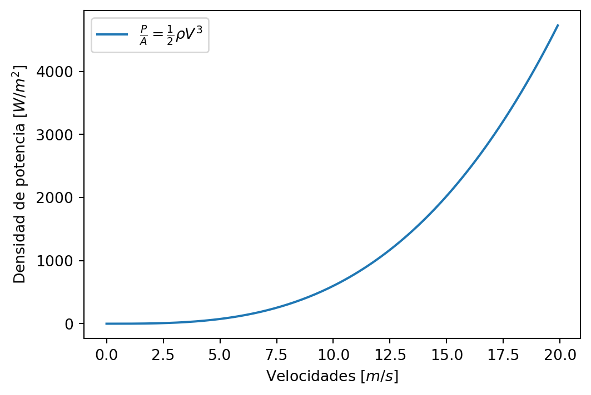

Código
a=1
b=2
print('La suma de a+b es igual a', a+b)La suma de a+b es igual a 3Este es el sitio oficial: https://quarto.org/
Un hipervínculo así:
con texto así:
Así se inserta código no ejecutable:
a=1
b=2
print (a+b)Y esto es un código ejecutable:
a=1
b=2
print('La suma de a+b es igual a', a+b)La suma de a+b es igual a 3Esta es una muy buena referencia de quarto markdown:
https://quarto.org/docs/authoring/markdown-basics.html
Referencia: https://quarto.org/docs/authoring/videos.html
Esto es una nota callout:
Potencia: Rapidez con la cual la enegía es empleada o convertida \(J/s=W\)
Así entra la numeración
Así bullets:
Script
Bold
Script-Bold
Este es texto previo
import matplotlib.pyplot as plt
import numpy as np
Velocidades = np.arange(0,20,0.1)
Potencia=.5*1.2*Velocidades**3
plt.plot(Velocidades,Potencia, label=r'$\frac{P}{A}= \frac{1}{2} \rho V^3$')
plt.xlabel('Velocidades [$m/s$]')
plt.ylabel('Densidad de potencia [$W/m^2$]')
plt.legend()
plt.show()
Las ecuaciones con latex pueden ir en la misma linea con $x^2$ para tener una salida \(x^2\). Una ecuación numerada es con por lo que el input es este:
$$
\begin{split}
V(z) &= \frac{\ln \left( \frac{z}{z_0} \right) }{ \ln \left( \frac{z_r}{z_0} \right) } V(z_r) \\
&= \frac{\ln \left( \frac{40}{0.1} \right) }{ \ln \left( \frac{10}{0.1} \right) } 5 = 6.51 \text{m/s}
\end{split}
$${#eq-etiqueta}Para obtener una salida así:
\[ \begin{split} V(z) &= \frac{\ln \left( \frac{z}{z_0} \right) }{ \ln \left( \frac{z_r}{z_0} \right) } V(z_r) \\ &= \frac{\ln \left( \frac{40}{0.1} \right) }{ \ln \left( \frac{10}{0.1} \right) } 5 = 6.51 \text{m/s} \end{split} \tag{2.1}\]
Así se cita Ecuación 2.1
| Tiempo | Velocidad [m/s] |
|---|---|
| 10 | 1 |
| 20 | 4 |
| 30 | 17 |
| 40 | 18 |
| 50 | 26 |
| 60 | 6 |
Asi se cita una figura Figura 2.2:
Este es una ejemplo de cita: Knuth (1984)
Y se inserta en la sección References
Aqui in ejemplo de nota al pie de página corta 1 y este es un ejemplo de una nota al pie de página larga 2.